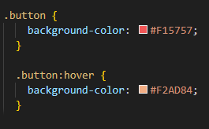
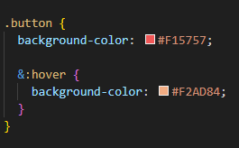

CSS: NESTING
Nesting allows you to place one style rule inside another, enabling the inner rule to use, or inherit, the same elements as the outer rule. This simplifies the process of grouping similar styles together in your CSS file, making it easier to read and manage your code.
CSS nesting using the ‘&’ syntax is typically associated with preprocessors like Sass and SCSS. It allows you to create more organized and maintainable CSS code by specifying styles for nested elements without repeating the parent selector.
Traditional CSS
CSS Nesting
LIMITATIONS
While nesting is a helpful feature, over-nesting can result in overly specific selectors and a more complex CSS output. It's important to use nesting judiciously to maintain a clean and efficient codebase.
ADVANTAGES
-
Readability: Nesting makes your code more structured and easier to follow since it visually represents the element hierarchy.
-
Maintenance: If you need to change the parent selector, you only need to update it in one place.
-
Reduced Repetition: You avoid repeating the parent selector, which can lead to more concise code.
SUMMARY
Nesting in CSS using the & syntax in preprocessors is a way to simplify your code and make it more maintainable by referencing the parent selector within nested blocks, reducing repetition, and improving code organization.
favorite so far: HOVER Selector
I personally don’t have a ton of experience coding in HTML and CSS, so I haven't learned a lot about the tools that the languages offer. That being said, I think that one of my favorite features of CSS that I have learned so far is the hover selector.
The main job of CSS is to format a page nicely, and it can start to feel like you are putting a lot of work into a static document. However, just by adding hover states to elements of your presentation, you can truly bring it to life, reminding viewers of the amazing component of the web: interactivity.
THE IMPACT OF AI
I believe that AI tools like ChatGPT, GitHub Copilot, and others are extremely helpful for web designers, and positively impact web development.
ChatGPT can be a great tool for students learning how to code for HTML and CSS. They can feed examples to the tool and have it explain to them what is going on, or even take more thorough and complex definitions and explanations from reputable resources such as w3.org and re-word them in ways easier to understand for individuals who may not yet have the vocabulary to navigate these spaces.
AI such as Copilot can reduce stress and save time by managing repetitive tasks and providing well structured data in no time. This allows developers to solve tasks more creatively, or put more time and energy in to higher level tasks. Human involvement remains crucial for creativity, ethical considerations, intricate decision-making, and understanding AI-generated outcomes. This ensures that websites are both effective and secure, while also aligning with human values and goals. When AI and human expertise work together, they can create more advanced, efficient, and user-friendly websites.